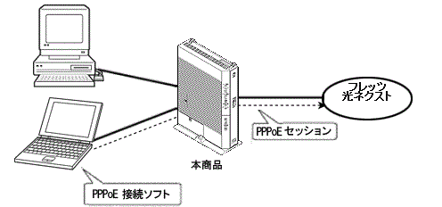

| PPPoEブリッジ |
PPPoE(PPP over Ethernet)プロトコルを搭載しているパソコンや
ゲーム機などを接続できます。
ルータを使うとIPアドレスがNATによって変わってしまうので使えないアプリケーションがあります。
しかし、PPPoEブリッジを用いると、ご利用の端末に直接グローバルIPアドレスを取得できます。
PPPoEブリッジを使用して本商品のLAN側に接続した機器（パソコンやゲーム機など）からの接続数と、本商品から接続する接続先の接続数の合計は、契約内容によって制限されます。 |
|  |
| |
ただし、下記のような状態では、PPPoEブリッジでのみ動作します。
- 本商品に対して、何も設定を行っていない状態（工場出荷時の状態）
- 「Web設定」の1回目のログイン時に、「設定ウィザード」の［利用タイプの選択］で、利用タイプを「インターネット設定しない」を選択し、その後、接続先設定を行っていない状態
- 「詳細設定」-「高度な設定」の［ブリッジ設定］で「PPPoEブリッジ」を「使用する」に設定し、「基本設定」-「接続先設定（IPv4 PPPoE）」で、「接続可」を 1つもチェックしていない状態
| |
| |
| PPPoEブリッジ機能でできること |
|
1.PPPoEブリッジ機能を使ってできること |
(1)パソコンのOSに標準搭載の PPPoE機能を使用して、インターネットに直接接続できます。
（例えば、Windows Live(R) Messenger なども利用できます。）
(2)PPPoE対応のゲーム機を接続できます。 |
|
| |
＜お知らせ＞
- PPPランプは、本商品がPPPoE変換をしているPPPセッションの状態を表示します。
しかし、本商品のPPPoEブリッジ機能を利用して、パソコンのPPPoE機能から接続する場合には、そのPPPセッションの状態が反映されません。
| |
| |
| 2.PPPoEブリッジ機能を使ったパソコンに搭載のOSでサポートされている機能を実現するために必要な条件 |
| |
本機能を使って パソコンに搭載のOS でサポートされている機能を実現するためには下記の条件が必要です。
・利用するパソコンおよびゲーム機などの端末がグローバルIPアドレスを取得できること
・これらの機能を使って通信する相手も同様の環境であること |
|
| |
＜お願い＞
- アプリケーションの操作方法は、パソコンのサポート窓口にお問い合わせください。
- ゲーム機の使用方法などについては、ゲーム機の取扱説明書などを参照してください。
| |
| |
| 設定方法 |
| (1)本商品の設定をする |
「Web設定」で設定します。
本商品の設定は、PPPoEブリッジの初期値が「使用する」になっています。 |
| |
| ■ 「Web設定」 |
|
|
|
|
|
↑ページのトップへ |
|